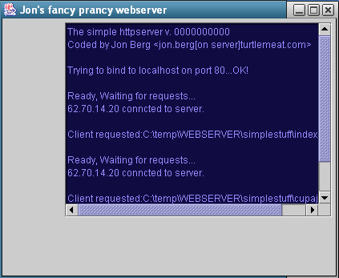

HOME
stuff you never thought you wanted to know.
|
|
|
|
|
|
Creating a simple java web server
Here is a tutorial on how to whip up a simple
web server in Java? with working runnable code; sourcecode and
bytecode files.
written by Jon
Berg. (figure out the email)

This is the window that comes up when you run the program,
just a little motivator so you can see what's in the end of the
tunnel.
Note to get the maximum
out of this tutorial it is recommended that you have a basic
grasp on how HTTP works. If the little man inside your head says
what tha H is HTTP, you should go to the bottom and check some
of the pointers. There you will find some nice text to explain
the basic concept.
Let's get started!
When making a program nowadays the first thing you should think
about is the GUI (graphical user interface). If the program dosen't
look fancy, you can just press all the cancel buttons on the
project. Ok that was meant as a joke, but there is some truth
in it. People tend to judge a program a lot on its look, even
though the real coding job is in making the stuff that goes on
behind the scenes.
The good news is that we are making this in Java, and since
Java is such a friendly programming language it's real easy to
get some interface going. Comments are in green.
//file: webserver_starter.java
//declare a class wich inherit JFrame
public class webserver_starter
extends JFrame {
//declare some panel, scrollpanel, textarea for gui
JPanel jPanel1 = new JPanel();
JScrollPane jScrollPane1 = new JScrollPane();
JTextArea jTextArea2 = new JTextArea();
static Integer listen_port = null;
//basic class constructor
public webserver_starter() {
try {
jbInit();
}
catch (Exception e) {
e.printStackTrace();
}
}
//the JavaAPI entry point
//where it starts this class if run
public static void main(String[] args) {
//start server on port x, default 80
//use argument to main for what port to start on
try {
listen_port = new Integer(args[0]);
//catch parse error
}
catch (Exception e) {
listen_port = new Integer(80);
}
//create an instance of this class
webserver_starter webserver = new webserver_starter();
}
//set up the user interface
private void jbInit() throws Exception {
//oh the pretty colors
jTextArea2.setBackground(new Color(16, 12, 66));
jTextArea2.setForeground(new Color(151, 138, 255));
jTextArea2.setBorder(BorderFactory.createLoweredBevelBorder());
jTextArea2.setToolTipText("");
jTextArea2.setEditable(false);
jTextArea2.setColumns(30);
jTextArea2.setRows(15);
//change this to impress your friends
this.setTitle("Jon\'s fancy prancy webserver");
//ugly inline listener, it's for handling closing of the window
this.addWindowListener(new java.awt.event.WindowAdapter() {
public void windowClosing(WindowEvent e) {
this_windowClosed(e);
}
});
//add the various to the proper containers
jScrollPane1.getViewport().add(jTextArea2);
jPanel1.add(jScrollPane1);
this.getContentPane().add(jPanel1, BorderLayout.EAST);
//tveak the apearance
this.setVisible(true);
this.setSize(420, 350);
this.setResizable(false);
//make sure it is drawn
this.validate();
//create the actual serverstuff,
//all that is implemented in another class
new server(listen_port.intValue(), this);
}
//exit program when "X" is pressed.
void this_windowClosed(WindowEvent e) {
System.exit(1);
}
//this is a method to get messages from the actual
//server to the window
public void send_message_to_window(String s) {
jTextArea2.append(s);
}
} //class end
|
In a nutshell this code sets up the window and makes everything
look good. If you look at the picture of the program on top of
this page. This code makes that!
Ok, enough time wasted on the look. Lets get down with the
fun stuff, making the actual httpserver.
//file: server.java
//the real (http) serverclass
//it extends thread so the server is run in a different
//thread than the gui, that is to make it responsive.
//it's really just a macho coding thing.
public class server
extends Thread {
//the constructor method
//the parameters it takes is what port to bind to, the default tcp port
//for a httpserver is port 80. the other parameter is a reference to
//the gui, this is to pass messages to our nice interface
public server(int listen_port, webserver_starter to_send_message_to) {
message_to = to_send_message_to;
port = listen_port;
//this makes a new thread, as mentioned before,it's to keep gui in
//one thread, server in another. You may argue that this is totally
//unnecessary, but we are gonna have this on the web so it needs to
//be a bit macho! Another thing is that real pro webservers handles
//each request in a new thread. This server dosen't, it handles each
//request one after another in the same thread. This can be a good
//assignment!! To redo this code so that each request to the server
//is handled in its own thread. The way it is now it blocks while
//one client access the server, ex if it transferres a big file the
//client have to wait real long before it gets any response.
this.start();
}
private void s(String s2) { //an alias to avoid typing so much!
message_to.send_message_to_window(s2);
}
private webserver_starter message_to; //the starter class, needed for gui
private int port; //port we are going to listen to
//this is a overridden method from the Thread class we extended from
public void run() {
//we are now inside our own thread separated from the gui.
ServerSocket serversocket = null;
//To easily pick up lots of girls, change this to your name!!!
s("The simple httpserver v. 0000000000\nCoded by Jon Berg" +
"<jon.berg[on server]turtlemeat.com>\n\n");
//Pay attention, this is where things starts to cook!
try {
//print/send message to the guiwindow
s("Trying to bind to localhost on port " + Integer.toString(port) + "...");
//make a ServerSocket and bind it to given port,
serversocket = new ServerSocket(port);
}
catch (Exception e) { //catch any errors and print errors to gui
s("\nFatal Error:" + e.getMessage());
return;
}
s("OK!\n");
//go in a infinite loop, wait for connections, process request, send response
while (true) {
s("\nReady, Waiting for requests...\n");
try {
//this call waits/blocks until someone connects to the port we
//are listening to
Socket connectionsocket = serversocket.accept();
//figure out what ipaddress the client commes from, just for show!
InetAddress client = connectionsocket.getInetAddress();
//and print it to gui
s(client.getHostName() + " connected to server.\n");
//Read the http request from the client from the socket interface
//into a buffer.
BufferedReader input =
new BufferedReader(new InputStreamReader(connectionsocket.
getInputStream()));
//Prepare a outputstream from us to the client,
//this will be used sending back our response
//(header + requested file) to the client.
DataOutputStream output =
new DataOutputStream(connectionsocket.getOutputStream());
//as the name suggest this method handles the http request, see further down.
//abstraction rules
http_handler(input, output);
}
catch (Exception e) { //catch any errors, and print them
s("\nError:" + e.getMessage());
}
} //go back in loop, wait for next request
}
//our implementation of the hypertext transfer protocol
//its very basic and stripped down
private void http_handler(BufferedReader input, DataOutputStream output) {
int method = 0; //1 get, 2 head, 0 not supported
String http = new String(); //a bunch of strings to hold
String path = new String(); //the various things, what http v, what path,
String file = new String(); //what file
String user_agent = new String(); //what user_agent
try {
//This is the two types of request we can handle
//GET /index.html HTTP/1.0
//HEAD /index.html HTTP/1.0
String tmp = input.readLine(); //read from the stream
String tmp2 = new String(tmp);
tmp.toUpperCase(); //convert it to uppercase
if (tmp.startsWith("GET")) { //compare it is it GET
method = 1;
} //if we set it to method 1
if (tmp.startsWith("HEAD")) { //same here is it HEAD
method = 2;
} //set method to 2
if (method == 0) { // not supported
try {
output.writeBytes(construct_http_header(501, 0));
output.close();
return;
}
catch (Exception e3) { //if some error happened catch it
s("error:" + e3.getMessage());
} //and display error
}
//}
//tmp contains "GET /index.html HTTP/1.0 ......."
//find first space
//find next space
//copy whats between minus slash, then you get "index.html"
//it's a bit of dirty code, but bear with me...
int start = 0;
int end = 0;
for (int a = 0; a < tmp2.length(); a++) {
if (tmp2.charAt(a) == ' ' && start != 0) {
end = a;
break;
}
if (tmp2.charAt(a) == ' ' && start == 0) {
start = a;
}
}
path = tmp2.substring(start + 2, end); //fill in the path
}
catch (Exception e) {
s("errorr" + e.getMessage());
} //catch any exception
//path do now have the filename to what to the file it wants to open
s("\nClient requested:" + new File(path).getAbsolutePath() + "\n");
FileInputStream requestedfile = null;
try {
//NOTE that there are several security consideration when passing
//the untrusted string "path" to FileInputStream.
//You can access all files the current user has read access to!!!
//current user is the user running the javaprogram.
//you can do this by passing "../" in the url or specify absoulute path
//or change drive (win)
//try to open the file,
requestedfile = new FileInputStream(path);
}
catch (Exception e) {
try {
//if you could not open the file send a 404
output.writeBytes(construct_http_header(404, 0));
//close the stream
output.close();
}
catch (Exception e2) {}
;
s("error" + e.getMessage());
} //print error to gui
//happy day scenario
try {
int type_is = 0;
//find out what the filename ends with,
//so you can construct a the right content type
if (path.endsWith(".zip"
) {
type_is = 3;
}
if (path.endsWith(".jpg") || path.endsWith(".jpeg")) {
type_is = 1;
}
if (path.endsWith(".gif")) {
type_is = 2;
//write out the header, 200 ->everything is ok we are all happy.
}
output.writeBytes(construct_http_header(200, 5));
//if it was a HEAD request, we don't print any BODY
if (method == 1) { //1 is GET 2 is head and skips the body
while (true) {
//read the file from filestream, and print out through the
//client-outputstream on a byte per byte base.
int b = requestedfile.read();
if (b == -1) {
break; //end of file
}
output.write(b);
}
}
//clean up the files, close open handles
output.close();
requestedfile.close();
}
catch (Exception e) {}
}
//this method makes the HTTP header for the response
//the headers job is to tell the browser the result of the request
//among if it was successful or not.
private String construct_http_header(int return_code, int file_type) {
String s = "HTTP/1.0 ";
//you probably have seen these if you have been surfing the web a while
switch (return_code) {
case 200:
s = s + "200 OK";
break;
case 400:
s = s + "400 Bad Request";
break;
case 403:
s = s + "403 Forbidden";
break;
case 404:
s = s + "404 Not Found";
break;
case 500:
s = s + "500 Internal Server Error";
break;
case 501:
s = s + "501 Not Implemented";
break;
}
s = s + "\r\n"; //other header fields,
s = s + "Connection: close\r\n"; //we can't handle persistent connections
s = s + "Server: SimpleHTTPtutorial v0\r\n"; //server name
//Construct the right Content-Type for the header.
//This is so the browser knows what to do with the
//file, you may know the browser dosen't look on the file
//extension, it is the servers job to let the browser know
//what kind of file is being transmitted. You may have experienced
//if the server is miss configured it may result in
//pictures displayed as text!
switch (file_type) {
//plenty of types for you to fill in
case 0:
break;
case 1:
s = s + "Content-Type: image/jpeg\r\n";
break;
case 2:
s = s + "Content-Type: image/gif\r\n";
case 3:
s = s + "Content-Type: application/x-zip-compressed\r\n";
default:
s = s + "Content-Type: text/html\r\n";
break;
}
////so on and so on......
s = s + "\r\n"; //this marks the end of the httpheader
//and the start of the body
//ok return our newly created header!
return s;
}
} //class phhew caffeine yes please!
|
BEWARE! When you run the web server you
are potentially opening for all your files to be red by the entire
Internet! The httpserver is only ment to be used for testing.
If you absoulutely want to run this httpserver for longer periods
of time; consider creating a new user with only read access to
the files you want to share and running it only with this user!
Download
the tutorial files! this
zipfile contains both sourcecode and compiled javabytecode files.
So you can test the program without having the javacompiler.
It also contains a sample index.html and a jpg file.
How to run the program? Get into commandline, cd to the dir
where you extracted the files (webserver_starter.class and the
other files). Then type: java webserver_starter
Then the window you see on top of this page should pop up.
To test if this httpserver is really functioning, you open your
browser, and in the location line you type: http://localhost/index.html
,this will bring up a sample html file that is in the zipfile.
If you want to test the httpserver from another machine on
the Internet, then you need to know the ip-address or hostname
the httpserver is running on, then you type that in the location
line in the browser, like http://123.123.123.123/index.html .Note,
it may not work if you are behind a firewall or a NAT router,
but that's not the programs' fault!
Update: Oct 2011. This code is not actively updated, but I changed a few
things mainly due to many people are referencing this. The switch (file_type) was
missing breaks. requestedfile.read() and output.write() now reads and writes a byte array which speeds things up.
And added favicon support since somebody asked about it.
How to compile: Open command line. cd to directory where you unpacked it. javac *.java
How to run: Open command line. cd to directory where you unpacked it. java -cp . webserver_starter
Pointers to related stuff on the hypertext
transfer protocol (http) and web servers:
HowStuffWorks
This is a very basic introduction for the novice on how web servers
works. Has also other text about Internet and Routers, in easy
to understandable language. Nice if you are starting out learning.
HTTP Made Really
Easy Here is some nice text that goes through the main points
in HTTP. A little more technical. It's recommended that you know
these things to understand the above tutorial.
Apache the best and most
widely used web server on the Internet today, check it out. If
you want to run your own web server this is the one to get, you
can get binaries for both Windows and Unix. You can download
the entire sourcecode if you want to check how it was made.
Mozilla / Netscape is
a nice web browser. Get rid of the Explorer, there are some rumors
that Internet Explorer secretly collects all the pages you are
visiting and sends it to microsoft.com.
RFC-1945
RFC describing Hypertext Transfer Protocol -- HTTP/1.0
RFC-2616
RFC describing Hypertext Transfer Protocol -- HTTP/1.1
RFC webpage
The Request For Comment webpage, RFC are technical documents
describing all sorts of protocols on the Internet.
Java2
Runtime / SDK Download site for the Java Runtime (needed
for running Java programs) and Java Software Development Kit
(needed for making Java programs).
Linux
Setup Software Raid 1 with LVM
Setup Linux with Desktop
Google
Manage your website ads with DFP
Google AdSense for Domains - not so great
Let Google Handle Email for your Domain Name
Page Rank banned by Google
Google's highest ranked web pages
SEO intelligent spam causes irrelevant search results
Google Sandbox
Google ranking factors
How to not give out page rank in web page links
Amazon
Amazon Cloudfront versus Shared Hosting
Web Server Programming
Simple Java web server
Simple Python web server
Configuring Apache webserver with .htaccess file
Windows
Turn off the loginscreen in XP, after installing .NET .
Turn off xp login screen unread mail count
What is .NET
Web (webmastering)
Introduction to Cascading style sheets (CSS)
The value of Alexa traffic rank
HTML META tag, not a search engine optimization tool
Create a maintainable webpage with modularization
The www prefix in your domain name
What is RSS and cool things RSS can be used for
MySql backup and restore with phpMyAdmin
Mix Computer related text
Doing business (making money) with Information Technology
Business with Computer Science
Research in Computer Science
Current and future possibilities of Medical Informatics
Tasks that make sense to have automated
Programming handheld mobile devices (overview)
Security tips for the web surfer
Price and Capacity in computer hardware
Java RMI Tutorial.
Microsoft Word
Page numbering in Word
Numbering headers or outlines in Word
Create a List of Figures
Turn off the default collapsing menus in Word
Turtlmeat.com 2004-2011 ©
|